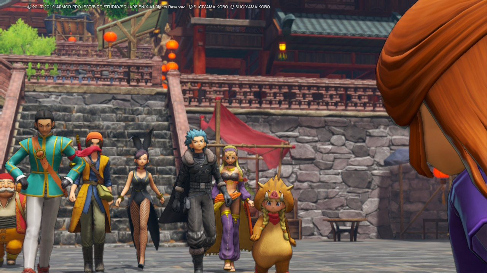

Reseña: Dragon Quest XI S: Echoes of an Elusive Age
Autor: Isaac Quinzada | Fecha: 19/04/2020 |
La legendaria saga JRPG llega con su onceava entrega a la Nintendo Switch, en una edición definitiva que enamorará a los fanáticos de la saga.
"Emprende una gran aventura de clásico corte rolero, con personajes memorables y una historia apasionante, en DRAGON QUEST XI S: Ecos de un pasado perdido – Edición definitiva para Nintendo Switch. Encarnas al Luminario, un joven que desciende de un héroe legendario que derrotó a las fuerzas del mal en el remoto pasado. Alíate con un elenco de compañeros carismáticos y embárcate en un viaje que te llevará a todo tipo de lugares para salvar al mundo de una terrible amenaza." - Nintendo
Emprende la aventura

Podrás jugar toda la aventura en un deslumbrante modo 2D si lo deseas
Una aventura épica por toda Erdrea
Con un diseño de personajes realizado por Akira Toriyama y una historia elaborada por el mítico “Dream Team” de los JRPG, te sentirás en la piel del protagonista desde el momento uno.
Los personajes son tan carismáticos y sus historias tan plenamente desarrolladas que lograrán que te encariñes con ellos, los sentirás como verdaderos camaradas y no como simples npc.

Un variado elenco de personajes
Contaremos con los clásicos roles de los JRPG tales como Ladrón, Mago, Sanador, Peleador, etc hasta completar un elenco de ocho personajes jugables, divididos en dos equipos, nuestro equipo principal y el equipo de “repuesto”. Podrás alternar entre los mismos en medio de un combate.
Aspecto gráfico
Existe la posibilidad de alternar entre dos modos de juego: Gráficos en 3D y Gráficos en 2D de 16 bits. Nos centraremos en el primero.
Esta versión definitiva tiene una resolución dinámica que varía entre 1280 x 720, 1408 x 792 y 1440 x 810 en el modo dock. Mientras que en el modo portátil rondará los 540p. Funcionando a unos estables 30 fps.
Sonido
Esta versión nos permite jugarla enteramente con un doblaje japonés de primer nivel, sin embargo es posible jugarlo doblado al inglés si así lo prefieres.
La banda sonora también posee dos opciones sintetizada u orquestada, siendo esta última una opción perfecta para largas horas de juego. Dicha banda sonora cuenta con las melodías más clásicas de la saga brindándonos un eufórico sentimiento de nostalgia.
Jugabilidad
El juego posee una jugabilidad por turnos, muy clásica de los JRPG, dándonos la posibilidad de idear diferentes estrategias para afrontar cada uno de los combates del juego. También contaremos con ataques definitivos conocidos como los poderes de Inspiración.
Esta versión nos permite además jugar los combates a una velocidad ultrarápida, muy ideal para cuando nos toque subir de nivel.
Algunas novedades
Entre las novedades más destacables se encuentran las siguientes:
- La ciudad de Horense, donde ayudaremos a los cronolinos viajando a distintos mundos pertenencientes a las anteriores diez entregas.
- Nuevas historias jugables para Servando, Jade, Erick y Rob.
- Doblaje japonés.
- Un grandioso modo para tomar fotografías de nuestro equipo.
Duración
El juego cuenta con “dos campañas” para no entrar en terreno de spoilers. La primera siendo la historia del juego nos tomó cerca de 80 horas superarla. La segunda historia se desarrollará luego de ciertos eventos, esta última nos tomó alrededor de 40 horas completarla. Sumando un total de 120 horas aproximadamente. No obstante, si vas directo hacia cada objetivo podría durarte incluso unas 80 horas en total. Estos tiempos pueden extenderse si quieres completarlo todo al cien por ciento.
Conclusión
Tenemos aquí al que posiblemente sea uno de los mejores juegos de todo el catálogo de la Nintendo Switch, además de un JRPG imprescindible para todo fanático de este género de videojuegos.
Existen pequeñas variaciones en el nombre de algunos protagonistas debido a la localización, pero no dañará en ningún momento la experiencia de juego. Si alguna vez pensaste en adentrarte a la saga de Dragon Quest este será el momento perfecto.

¡Atrévete a iniciar la aventura!
Nota Final: 9
“Uno de los mejores JRPG de esta generación”
| Historia: 10 | Jugabilidad: 9 |
| Gráficos: 9 | Sonido: 8 |
| Diseño: 9 | Multijugador: - |